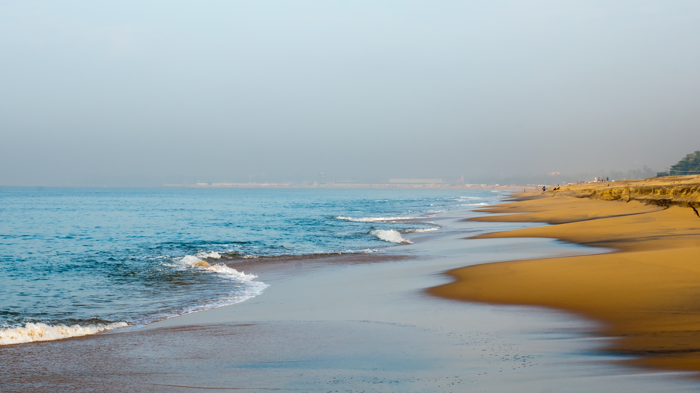

A treasure trove of natural wonders and historical edifices, Kollam is an enchanting town with backwaters and picturesque landscapes. Located 70kms away from Thiruvananthapuram, Kerala, Kollam is a commercial centre and home to India’s cashew producing industry. Popularly known as Quilon, it is often regarded as the gateway to the backwaters of Kerala.
It sits on the bank of the Ashtamudi Lake, hence, cruising along the Alappuzha route is one of the main highlights of the region. With a history dating back to the 9th century, Kollam was a prominent spice trading centre. It is one of the oldest ports in the Arabian Sea that lies on the southwest coast which was frequented by iconic merchants, missionaries and explorers including Marco Polo, Ibn Battuta, Vasco da Gama, Henrique Henriques and many more. Venture the lesser-known path, and this beautiful city on India’s Malabar Coast is sure to enchant you.
The first planned eco-tourism destination in India, Thenmala is located by the Kallanda River and is famous for being a favorite shooting location for Tamil and Malayalam films. The town attracts several tourists with its trekking and mountaineering spots and lush green surroundings. The Hanging Bridge is a popular attraction along with the Thenmala Dam.
With a massive height of 91 meters the Palaruvi Waterfalls are a horsetail waterfall and a major tourist attraction in Kollam. The name Palaruvi literally means a stream of milk and is one of the most picturesque places to visit in Kerala. The lush green surrounding with the backdrop of the misty mountains make it a perfect picnic spot to relax your body and senses.
Named after Colonel John Munroe from the British Colonial Period, Munroe Island is a famous tourist destination located in the backwaters of Asthamudi River. The island is home to a plethora of attractions including Watersports, fishing, boat racing and watching migratory birds etc.